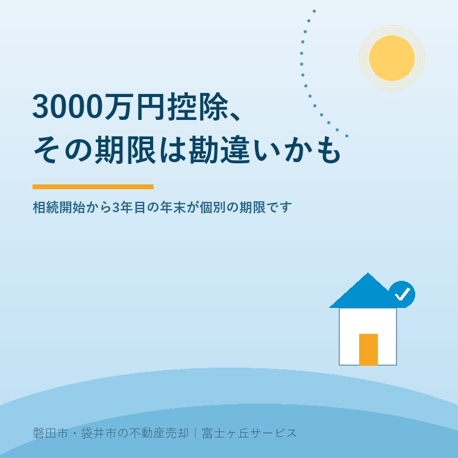

2026年7月15日｜カテゴリ：空き家・税金

この記事の要点
Q. 空き家の3000万円控除、まだ2027年まで余裕があると聞いたけど本当？
A. 制度全体の期限は2027年12月31日までですが、実際に使えるかどうかは「相続が始まった日から3年を経過する日の属する年の12月31日」という家ごとの個別期限で決まります。親が亡くなったのが数年前なら、既に使えなくなっている場合もあります。磐田市・袋井市では、こうした期限の見極めも含め、介護施設の運営から不動産事業を始めた富士ヶ丘サービスのような「介護×不動産」専門の会社に相談するという選択肢があります。
「空き家の3000万円控除は2027年まで延長されたらしいから、うちはまだ大丈夫」——そう思っている方に、まず知っていただきたいことがあります。この特例には、制度全体の期限とは別に、家ごとの「個別の期限」が存在します。相続がいつ発生したかによっては、2027年を待たずに、すでに使えなくなっているケースもあるのです。この記事では、意外と見落とされがちなこの「期限の数え方」を、磐田市・袋井市で実家の売却相談を受けてきた立場から解説します。
正式には「被相続人の居住用財産（空き家）を売ったときの特例」といい、親などが亡くなり、その方が一人で住んでいた家（空き家）を相続人が売却したとき、譲渡所得から最大3,000万円を控除できる制度です。主な要件は次のとおりです。
| 主な要件 | 内容 |
|---|---|
| 家屋の建築時期 | 昭和56年5月31日以前に建築された家屋（新耐震基準より前） |
| 居住状況 | 相続開始の直前まで、被相続人が一人で住んでいたこと（老人ホーム等への入居で緩和される特例あり） |
| 建物の種類 | 区分所有建物登記がされている建物（マンション等）は対象外 |
| 譲渡方法 | 更地にして売る、または耐震基準を満たす形で売る |
| 譲渡価額 | 1億円以下 |
| 控除額 | 最大3,000万円（令和6年1月1日以後の譲渡で相続人が3人以上の場合は、1人あたり最大2,000万円） |
この特例はもともと2023年12月31日までの時限措置でしたが、税制改正により2027年（令和9年）12月31日までの譲渡分に延長されました。ここまでは、多くの方がなんとなく知っている話かもしれません。問題は、この先です。
国税庁の解説によれば、この特例は「相続の開始があった日から3年を経過する日の属する年の12月31日までに譲渡すること」という要件があります。つまり、2027年12月31日という日付は、あくまで制度全体としての最終ラインです。それとは別に、それぞれの家には「相続が発生した日（＝亡くなった日）」を起点にした個別のカウントダウンが存在します。
| 親などが亡くなった年（相続開始年） | 家ごとの個別期限 | 2026年7月時点の状況 |
|---|---|---|
| 2021年（令和3年）以前 | 2024年12月31日以前 | すでに期限切れ |
| 2022年（令和4年） | 2025年12月31日 | すでに期限切れ |
| 2023年（令和5年） | 2026年12月31日 | 今年度中が期限（急ぎたい） |
| 2024年（令和6年） | 2027年12月31日 | 制度全体の期限と一致 |
| 2025年（令和7年）以降 | 本来はさらに先だが、制度全体の期限（2027年12月31日）が優先して適用される | 2027年12月31日までが実質の期限 |
この表からわかるとおり、「2027年まで延長された」という情報だけを覚えていると、親が2022年やそれ以前に亡くなっているご家庭では、実はすでにこの特例が使えなくなっている可能性があります。逆に、2023年に相続が発生したご家庭は、2026年（今年）の年末が個別期限にあたるため、思っているよりも急いで動く必要があるかもしれません。「制度が延長された」というニュースだけを聞いて、自分の家の期限を確認しないまま安心してしまうことこそが、この特例の一番の落とし穴です。
期限の計算に加えて、次のような要件も見落とされがちです。
昭和56年5月31日という建築時期の要件は、新耐震基準が導入された時期を基準にしています。この日以降に建てられた家屋は、原則としてこの特例の対象外です。また、分譲マンションのように区分所有建物として登記されている建物も対象になりません。戸建てであっても、増改築の履歴によって扱いが変わる場合があるため、登記情報を確認しておくことが大切です。
相続開始の直前まで被相続人が一人で住んでいたことが原則の要件ですが、老人ホームなどの施設に入居していた場合でも、一定の要件（要介護認定を受けていたこと、施設入居後に家屋を貸付け等に使っていないことなど）を満たせば、特例の対象に含められる緩和措置があります。この判定はやや専門的なため、施設入居を経て相続が発生したご家庭では、早めに確認しておくと安心です。
磐田市・袋井市で実家の相続に関わるご相談をお受けする中で、私たちがまずお願いしているのは、次の2点の確認です。ひとつは、相続開始日（亡くなった日）を正確に把握し、上の表に当てはめて「うちの個別期限はいつなのか」を逆算すること。もうひとつは、家屋の建築時期や登記の状況を、登記事項証明書などで確認することです。この2つが分かるだけで、「急いで動くべきか」「まだ少し時間があるのか」の見通しが立ちます。特に相続から数年が経っているご実家は、思い立ったときにはもう期限を過ぎていた、ということにならないよう、早めの確認をおすすめします。
相続はじめ相談室｜富士ヶ丘サービス
「うちの期限」、一緒に確認しませんか。
相続開始日から3000万円控除の個別期限を確認し、名義・相続登記・境界など売却時の支障がないかも、宅建士が机上調査してお伝えします。税額の最終判断は税理士と連携しながら進めます。強引な売却営業は行いません。
価格の前に現状を整理したい方はふじがおか実家カルテ（作成料0円・資料取得実費1,000円前後）もご利用いただけます。対応エリア：磐田市・袋井市・掛川市・森町・浜松市一部｜富士ヶ丘サービス株式会社（静岡県知事 (2) 第14083号）
「2027年まで延長された」という一行だけを覚えていると、自分の家の個別期限を見誤ってしまうことがあります。相続がいつ発生したご実家なのか、まずはそこから確認してみてください。
本記事は2026年7月15日時点の情報をもとに作成しています。税制の要件・期限・控除額は今後変更される場合があります。個別の適用可否や税額計算は、必ず税理士・税務署にご確認ください。
参考情報（出典）：国税庁「No.3306 被相続人の居住用財産（空き家）を売ったときの特例」／国土交通省「空き家の発生を抑制するための特例措置（空き家の譲渡所得の3,000万円特別控除）」関連情報／令和5年度税制改正 空き家特例の見直しに関する各種解説。
磐田市・袋井市の実家じまい・相続空き家相談
固定資産税通知書だけでも相談できます
住所があいまいでも、通知書や写真から名義・道路・農地・残置物の確認順を整理します。カルテ申込またはLINEで状況を送ってください。
富士ヶ丘サービス株式会社／静岡県磐田市見付5789番地1／TEL:0538-31-3308／静岡県知事 (2) 第14083号／http://www.fujigaoka-service.co.jp/／公益社団法人 全日本不動産協会／公益社団法人 不動産保証協会／公正取引協議会加盟事業者